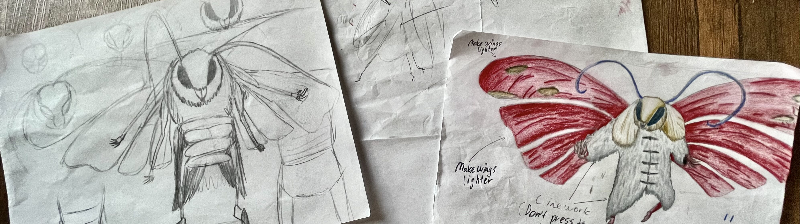

Art
Pixel Art
In game development, there are many areas to explore, and one of them is pixel art. There's something uniquely satisfying about working within limitations to create expressive, detailed images using a small number of pixels. I like to create little sprites—characters, enemies, items, and environments—each one made with care to fit the style and mood of the game. Whether I'm designing a hero for a platformer or a background tile for a retro-style RPG, I find the process both fun and rewarding. I use Aseprite as my main tool for creating and animating sprites, thanks to its intuitive interface and powerful features tailored specifically for pixel art. I also often refer to Lospec for color palettes, which have helped me understand color theory. Pixel art was a completely new skill when I started, and while it came with its challenges, I stayed persistent.
Concept art section (short section)
One of my creative hobbies is concept art, which allows me to bring ideas to life through sketches and illustrations. I often use my sketchbook to explore different character designs, environments, and creatures, experimenting with shapes and styles until something clicks. These sketchbook examples not only help me improve my drawing skills, but they also serve as a visual foundation for potential game ideas or stories I’d like to develop further.